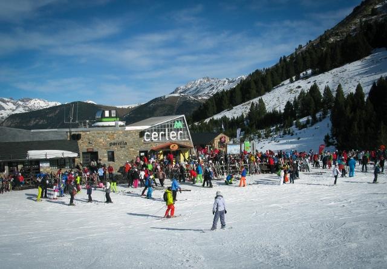

Estación de esquí Cerler
La estación de esquí de Cerler situada en el valle de Benasque, en pleno corazón del Pirineo aragonés, es una de las más altas de España, alcanzando los 2,630 metros en su punto más elevado, lo que asegura nieve de calidad durante toda la temporada.
Con 77 km esquiables distribuidos en más de 60 pistas para todos los niveles, Cerler combina modernas instalaciones de remontes con servicios de primer nivel.
Los visitantes disfrutan de espectaculares vistas a montañas emblemáticas como el Aneto, el Posets y el Perdiguero. Además, ofrece zonas específicas para snowboard y freestyle, junto a actividades alternativas como rutas de senderismo.
Todo esto, acompañado del cálido ambiente y hospitalidad típica de la región, convierte a Cerler en un destino ideal para los amantes de la nieve y la montaña.
